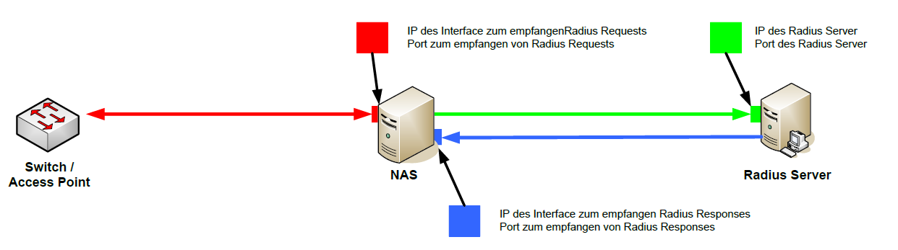
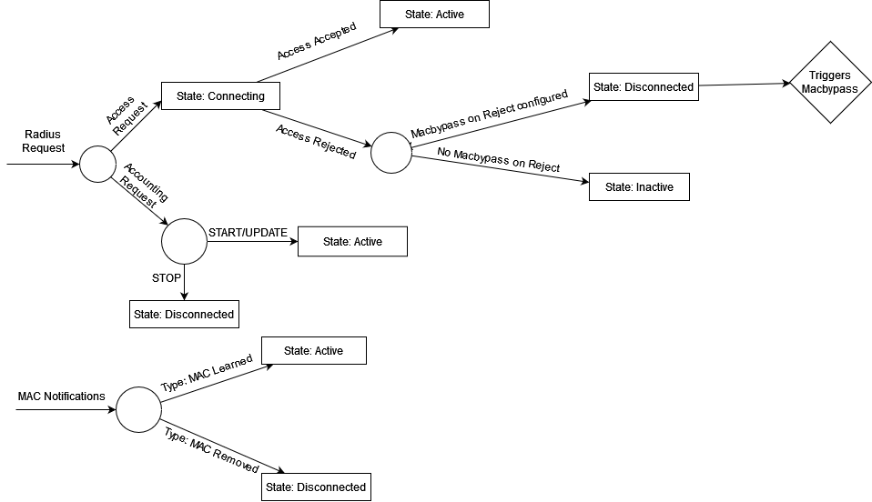

User Manual
Copyright © 2026 United Security Providers AG
This document is protected by copyright under the applicable laws and international treaties. No part of this document may be reproduced in any form and distributed to third parties by any means without prior written authorization of United Security Providers AG.
DOCUMENTATION IS PROVIDED "AS IS" AND ALL EXPRESSED OR IMPLIED REPRESENTATIONS AND WARRANTIES, INCLUDING BUT NOT LIMITED TO ANY IMPLIED WARRANTY OF MERCHANTABILITY, FITNESS FOR A PARTICULAR PURPOSE OR NON-INFRINGEMENT, ARE DISCLAIMED TO THE EXTENT PERMISSIBLE UNDER THE APPLICABLE LAWS.
Table of Contents
To install the system, you first need to configure your appliance or your VM to boot from the USP NAS .iso file. After booting from the .iso, select the option "Install appliance operating system" in the bootloader menu. Installation will proceed without needing any user interaction. Partitions and filesystems will be created and the USP NAS System will be installed. The System will then restart automatically and boot the USP NAS operating system.
Once the installation is completed, a login prompt will be displayed on the console. You can log in to the basic system configuration menu using the console user with the following credentials:
- Username: console
- Password: console
The network interface of the appliance and the default gateway can be set via the console menu. After completing the initial network setup, you can access the web-based USP NAS GUI using a web browser of your choice (Google Chrome, Mozilla Firefox or Microsoft Edge is recommended) via the configured IP address to continue with the configuration of the USP NAS application.
USP NAS offers the possibility to install software updates via the Web GUI (System → Update). You can upload the update image directly via the Web GUI file chooser. Alternately, the image can be uploaded via SFTP using the transfer user, whose password you can configure in the Web GUI (System → SSH Access). In this case, the image must be placed in the update directory. After selecting the update image and clicking the Update button in the Web GUI, the system will be updated and restarted without requiring further intervention. Please note that the update process can take several minutes.
What are the system requirements to install NAS?
We recommend the configurations for a virtual server:
| 1-5000 Endpoints | 5000-100000 Endpoints | |
|---|---|---|
RAM | 8 GB | 16 GB |
Processors cores | 2-4 | 8 |
Harddisk size | 50 GB | 140 GB |
How do I set up high-availability (HA)?
To set up high-availability, you need at least two USP NAS servers (further called nodes) and have the Authenticator module licensed. One of the nodes will run in MASTER-mode, and the other node(s) will run in AUTHENTICATOR-mode. This can be configured in the Web GUI in Configuration → HA Authenticator. The configuration is composed of two steps:
Configure AUTHENTICATOR/MASTER
In one node, the mode must be set as MASTER. Then, all Authenticator instances can be added in the AUTHENTICATOR instance list with their respective IP address and hostname. On the other nodes, the mode must be set as AUTHENTICATOR, and the hostname and IP of the master node must be provided.
Exchange HA certificate
In order for the AUTHENTICATOR nodes to communicate with the MASTER, the HA certificate must be exchanged between the systems. To do so, you can download the certificates of each node in Configuration → HA certificate. In the same menu, the certificate of another node can be imported. Using these tools, you will need to import all the AUTHENTICATOR certificates on the MASTER node, and the MASTER certificate must be imported on each AUTHENTICATOR node.
What does the HA architecture look like? How does the HA mode work?
An AUTHENTICATOR node is operating almost completely independently of the MASTER system. By default, an AUTHENTICATOR node fetches a copy of the policy and inventory from the MASTER system once a day. The AUTHENTICATOR checks the availability of the MASTER system at short regular intervals and forwards incoming SNMP traps and RADIUS requests to the master as long as it is available. If the master system fails (AUTHENTICATOR node gets no responses from MASTER) or is overloaded, the AUTHENTICATOR immediately takes over the authentication functionality. As soon as the master is online again, authentication requests are forwarded to the MASTER system again.

How does the synchronization between MASTER and AUTHENTICATOR systems work?
The high-availability functionality of USP NAS includes a periodic synchronization where an AUTHENTICATOR node copies the database from the MASTER node. This includes, among others:
- Core configuration
- Policy configuration
- Inventory (endpoints, netdevices etc.)
- Certificates
- (Scheduled) scripts
- Alert/Event forwarding
- SMTP server and alert email recipient
Excluded from the synchronization are:
- Connection events
- Event logs
- Monitoring thresholds
- Monitoring history
- Scheduled reports
- Scheduled backups
- File servers
- Data import history
The synchronization schedule can be configured using a cron pattern.
The USP NAS Web GUI offers also the option to carry out a synchronization manually. It is recommended to do this after setting up a new authenticator node.
In addition to synchronizing the policy, an AUTHENTICATOR system provides a function to synchronize particular system configuration information from the MASTER to an AUTHENTICATOR node. The following configuration settings are synchronized using the "Config Synchronization":
Monitoring/alerting settings
- Syslog server
- SNMP trap destinations
- Local SNMPD server
Expert settings (set via CLI)
- Additional operating system users
- Customized database access and performance configuration
Not included in the config synchronization are, among others, the following settings which have to be set manually on every instance:
- System contact / location
- NTP server
- Network settings
- System monitoring thresholds
- Where can I configure and manage users for Web GUI or system access?
- How can users be managed locally?
- How can I define a password policy for local users?
- How do I configure LDAP authentication for USP NAS?
- What is the multi-domain login feature for Web GUI users?
- How can USP NAS user roles be mapped in Active Directory (for Web GUI users only)?
- What is the Domain SID config in the LDAP configuration (for system users only)?
- How do I define LDAP Login configurations for Web GUI users?
- How do I define the LDAP Login configuration for system users?
- What roles are there available in the Web GUI? How do the permissions work?
- How can users log in to the Web GUI with single sign-on (OpenID Connect)?
- Which redirect URI must be registered at the identity provider?
- How do I register USP NAS in Microsoft Entra ID?
- How do I configure an OpenID Connect provider in USP NAS?
- How are USP NAS roles assigned to OpenID Connect users?
- What can I do if the OpenID Connect login fails?
- What is the transfer user?
Where can I configure and manage users for Web GUI or system access?
There are three ways to manage Web GUI and system users:
- Locally on the appliance using the user-management provided in the Web GUI
- Using an Active Directory (AD) to authenticate users via LDAP
- Using an external identity provider via OpenID Connect (single sign-on, for Web GUI users only)
How can users be managed locally?
In the All Users menu users can be added, edited and deleted. When you add or edit a user, you can define its password, decide if the user is active and define its roles. If you use tenants, you can also assign a user to a tenant.
The passwords of local users must comply with the configured password policy, see How can I define a password policy for local users?
How can I define a password policy for local users?
The password policy for local Web GUI users is configured in the Web GUI in "Configuration → Application", section "Web GUI", field "Password policy". This section is only visible in the "Advanced" mode, which can be selected with the mode switcher on top of the page.
The policy is defined as a list of key=value pairs separated by semicolons, for example:
minLength=10;maxLength=64;lower=1;upper=1;digit=1;special=1;whitespace=false
The following keys are supported:
Key | Description | Default |
| Minimum number of characters |
|
| Maximum number of characters. |
|
| Minimum number of lower-case letters ( |
|
| Minimum number of upper-case letters ( |
|
| Minimum number of digits ( |
|
| Minimum number of special characters, i.e. any character that is not a letter, digit or whitespace |
|
| Whether whitespace (e.g. spaces) is allowed in the password ( |
|
Notes on the format:
- Keys are case-insensitive, and whitespace around keys and values is ignored.
- Keys that are omitted keep their default value. Each key may only be specified once.
-
A character class key without a value (e.g.
upperinstead ofupper=1) means "at least one". -
Letters are only counted as lower-case or upper-case if they are ASCII letters.
Other characters, such as accented letters (e.g.
ä,é), count as special characters. -
The policy must be consistent:
maxLengthmust not be smaller thanminLength, and the sum of the required lower-case, upper-case, digit and special characters must not exceedmaxLength.
An invalid policy (e.g. an unknown key or a non-numeric value) is rejected when the settings are saved.
The default policy after installation is minLength=8.
The policy is enforced whenever a password of a local user is set:
- When an administrator creates a new user or changes the password of an existing user in the user management.
- When users change their own password in their user profile.
The rules of the active policy are displayed below the password fields, so users can see which requirements their new password must meet. A password that does not comply with the policy is rejected.
Note
The password policy only applies when a password is set or changed. Existing passwords remain valid even if they do not comply with a newly configured policy. The policy does not apply to users authenticated via LDAP or OpenID Connect, as their passwords are not managed by USP NAS.
How do I configure LDAP authentication for USP NAS?
The LDAP Login can be configured in the Web GUI in "Configuration → User management", tab "LDAP Servers". From there, two types of LDAP logins can be configured:
- LDAP Login for Web GUI users (multi-domains login available)
- LDAP Login for system users (only single domain login available)
What is the multi-domain login feature for Web GUI users?
Usually there is only one domain required to provide authentication for Web GUI users.
With the multi-domain extension it is possible to store several domains as authentication backends.
This feature is therefore only relevant for environments with multiple domains.
The default configuration is the configuration which will be applied first if the username is provided without domain name.
To log in using another domain configuration, the user must provide the server name in the following format: servername/username.
For system user login, only one configuration may be defined. That means that system users may be managed only by one dedicated LDAP server. These users will all have root privileges on the USP NAS system. User home directories on USP NAS are not persistent across reboots, therefore, they should only be used to temporarily store files.
How can USP NAS user roles be mapped in Active Directory (for Web GUI users only)?
In the Web GUI, different user roles are available. To assign these roles to AD-based users, the roles which will be used have to be defined in Active Directory as group-objects. These group objects need to have an attribute which does match exactly the given role name. It might be the "cn" of the group or any other attribute like "description". No matter which attribute is chosen, the name of the attribute must be specified in the LDAP config under "LDAP name of the role attribute".
What is the Domain SID config in the LDAP configuration (for system users only)?
In the system LDAP configuration there is only one role, therefore no groups need to be defined for the roles. In contrast to the web GUI configuration, the domain SID must be specified here. The domain SID corresponds to the SID of any object (e.g. user object) of an AD without the part after the last hyphen i.e.:
-
SID of a user:
S-1-5-21-3172367666-555659623-114111100-1335 -
Domain SID:
S-1-5-21-3172367666-555659623-114111100
The domain SID is required for successfully configuring system LDAP authentication. If you are logged in as a domain user in a Windows system you might get the user SID with the following command in the Windows Command Prompt:
wmic useraccount where name='{username}' get sidHow do I define LDAP Login configurations for Web GUI users?
Active | Defines if this LDAP configuration is active or not | True / False |
Default | If true, this configuration will be the first to be tried if no servername is provided with the username | True / False |
Name of the server | Name of the server, can be provided during the login to specify which configuration must be used | DOMAIN1 |
URL of LDAP server | URL of the LDAP Server | <ldap://server:port, ldaps://server:port> |
LDAP DN of the service user for the initial bind | DN of the administrative user for the initial bind to LDAP, for searching the authenticating user. Read permissions to the required LDAP directory are required. |
|
LDAP password of the service user | Password of the administrative user for the initial bind to the LDAP |
|
LDAP DN where to search for the user | Base DN under which users are searched for the initial bind. |
|
LDAP filter to search for users | LDAP filter with the user searched for the initial bind. |
|
LDAP DN to search for groups | Base DN under which roles (authorizations) are searched for |
|
LDAP filter to search for group(s) | Filter to search the group objects for the roles. |
|
LDAP name of the role attribute | Name of the attribute of the groups which define the role. It might be the "cn" of the group or any other attribute, e.g. "description". But the value has to match exactly the role-name (see available roles below) |
|
How do I define the LDAP Login configuration for system users?
Active | Defines if this LDAP configuration is active or not | True / False |
Name of the server | Name of the server, can be provided during the login to specify which configuration must be used (only relevant in multi-domain environments): domain1/username | domain1 |
URL of LDAP server | URL of the LDAP Server | <ldap://server:port, ldaps://server:port> |
LDAP DN of the service user for the initial bind | DN of the administrative user for the initial bind to LDAP, for searching the authenticating user. Read permissions to the required LDAP directory are required. |
|
LDAP password of the service user | Password of the administrative user for the initial bind to the LDAP |
|
LDAP DN where to search for the user | Base DN under which users are searched for the initial bind. |
|
LDAP filter to define which users are allowed | LDAP filter for the users which have the permission to log in as system users. This filter has to match exactly those users which are allowed to log in. |
|
LDAP Domain SID | SID for the configured LDAP Domain. |
|
What roles are there available in the Web GUI? How do the permissions work?
USP NAS has several WebGUI user roles with different system permissions:
| Name | Name to be set for the LDAP role attribute | Description |
|---|---|---|
Helpdesk |
| Users with the role Helpdesk can check the USP NAS operating status and can block or unblock ports. Further they can give temporary access to unauthorized endpoints. |
Support |
| The Support role has the Helpdesk’s permissions and additionally the possibilities to change existing rules. |
Admin |
| All users assigned to the Admin role have full control to all USP NAS functions including the configuration of the entire set of rules. By performing changes on the policy as an administrator the changes will not be applied instantly to the running configuration. The changes are only applied in a policy workspace. Not until this workspace is activated explicitly they will be copied in one transaction to the running config. Therefore, multiple admin users cannot be logged in at the same time. |
Monitoring |
| The Monitoring role is typically used to integrate USP NAS in an existing monitoring environment. |
Reporting |
| The Reporting role especially exists for data evaluation. Users with this role have the permissions to visualize saved NAS-data in a clearly arranged and consolidated fashion using the predefined web reports. |
User administration |
| The User administration role exists for the administration of USP NAS users. Only users with that role can add new users and modify or delete existing users. |
Read-Only |
| With the Read-Only role a user can log in to USP NAS with reading permissions only. |
Policy read-only |
| With the policy read-only role a user can log in to USP NAS having read access to the policy-views. In contrast to admin users, several users with the policy read-only role can be logged in at the same time |
REST API |
| With the REST API role, a user can use the REST API to fetch status and inventory data |
Inventory importer |
| Users with this role can import inventory data via CSV file upload or REST API (if REST API role is assigned as well) and see the status of recent data import jobs |
How can users log in to the Web GUI with single sign-on (OpenID Connect)?
Web GUI users can log in through an external identity provider that supports OpenID Connect (OIDC), for example Microsoft Entra ID, Keycloak or Okta. For every enabled provider, the login page shows a button "Sign in with <provider>". The user authenticates at the identity provider, which sends the user back to USP NAS with an ID token. USP NAS reads the roles of the user from a claim of this token and logs the user in with the mapped USP NAS roles.
-
No local user is created for OIDC users.
The user name shown in the Web GUI and in the logs is
<registration ID>:<subject>, where the subject is thesubclaim sent by the identity provider. - Users without a mapped USP NAS role cannot log in, even if the identity provider has authenticated them.
- OIDC login is only available for the Web GUI, not for system (SSH/console) users.
- USP NAS must be able to reach the issuer URI of the identity provider over HTTPS.
OpenID Connect providers are managed in the Web GUI under "Configuration → User management", tab "OpenID Connect".
Which redirect URI must be registered at the identity provider?
After the login, the identity provider sends the user back to the following URI of USP NAS:
https://<USP NAS host name>/ng/login/oauth2/code/<registration ID>
Example: https://nas.example.com/ng/login/oauth2/code/entra
The dialog for adding or editing an OpenID Connect provider shows this URI in the field "Redirect URI" and lets you copy it to the clipboard. The URI is built from the address in the browser, so open the Web GUI with the host name that users will use to log in. The identity provider compares the redirect URI exactly: scheme, host name, path and registration ID must match. If users reach USP NAS under several host names, register one redirect URI per host name.
How do I register USP NAS in Microsoft Entra ID?
- In the Microsoft Entra admin center, open "App registrations" and select "New registration".
-
Enter a name, e.g.
USP NAS, and select the supported account types (usually "Accounts in this organizational directory only"). - Under "Redirect URI", select the platform "Web" and enter the redirect URI of USP NAS (see Which redirect URI must be registered at the identity provider?).
- On the "Overview" page of the app registration, copy the "Application (client) ID" and the "Directory (tenant) ID".
- Under "Certificates & secrets", create a new client secret. Copy its value immediately, Entra ID shows it only once. Note the expiry date.
-
Under "App roles", create one app role per USP NAS role you want to assign, e.g.
NasAdminandNasHelpdesk. Set "Allowed member types" to "Users/Groups". - In "Enterprise applications", open the application and assign users or groups to the app roles under "Users and groups".
Then add the provider in USP NAS with these values:
-
Issuer URI:
https://login.microsoftonline.com/<tenant ID>/v2.0 - Client ID: the application (client) ID
- Client secret: the value of the client secret
- Client secret expires on: the expiry date of the client secret
-
Claim:
roles -
Role mappings: one mapping per app role, e.g.
NasAdmin→ Admin
Entra ID puts the assigned app roles into the roles claim of the ID token.
Instead of app roles, the groups claim can be used ("Token configuration → Add groups claim").
In this case, the claim values are the object IDs of the groups, not their names.
How do I configure an OpenID Connect provider in USP NAS?
In "Configuration → User management", tab "OpenID Connect", click "Add OpenID Connect provider" and fill in the following fields:
Enabled | Only enabled providers are shown on the login page. | True / False |
Display name | Name shown on the login button "Sign in with …". |
|
Registration ID | Unique technical name of the provider. It is part of the redirect URI and cannot be changed later. Only letters, digits, |
|
Redirect URI | Read-only. The URI to register at the identity provider, see Which redirect URI must be registered at the identity provider?. |
|
Issuer URI | Issuer of the identity provider. USP NAS reads the endpoints of the provider from |
|
Client ID | ID of the client (application) registered at the identity provider. | |
Client secret | Secret of the client. When editing a provider, leave the field empty to keep the current secret. | |
Client secret expires on | Optional. Expiry date of the client secret. Starting 30 days before this date, the status overview and the provider list show a warning. | |
Scopes | Comma-separated list of the requested scopes. |
|
Claim | Claim of the ID token whose values are mapped to USP NAS roles. Nested claims are separated by a dot. |
|
Role mappings | Assigns a USP NAS role to a value of the claim. |
|
After saving, log out and check that the login page shows the new button.
How are USP NAS roles assigned to OpenID Connect users?
For every provider, a claim of the ID token is selected, e.g. roles, and its values are mapped to USP NAS roles (see What roles are there available in the Web GUI? How do the permissions work?).
The claim can contain a single value or a list of values.
A user receives all USP NAS roles that are mapped to any of their claim values.
Values without a mapping are ignored.
If none of the values is mapped, the login is denied.
Examples for the claim:
-
Entra ID app roles:
roles(recommended) -
Entra ID group object IDs:
groups -
Keycloak realm roles:
realm_access.roles -
Providers without role information, e.g. Google:
email. In this case, every user who is allowed to log in needs a mapping of their own.
The roles are evaluated at every login. Changes at the identity provider take effect with the next login of the user.
What can I do if the OpenID Connect login fails?
-
The identity provider reports an invalid redirect URI (Entra ID:
AADSTS50011): the redirect URI registered at the identity provider does not match exactly. Copy the redirect URI from the provider dialog in USP NAS and register it at the identity provider (see Which redirect URI must be registered at the identity provider?). - "Single sign-on failed": the login was cancelled, or USP NAS could not validate the response of the identity provider. Check that USP NAS can reach the issuer URI, that client ID and client secret are correct, and that the client secret has not expired. Details are written to the Web GUI log files.
- "No NAS role is assigned to your account": the user was authenticated, but none of their claim values is mapped to a USP NAS role. Check the claim name, the role mappings and the role assignment at the identity provider. The received claim values are written to the Web GUI warning log.
- The login button is missing: the provider is disabled.
The transfer user is a user that has limited SSH access to the system. The user can connect via SCP or SFTP and access some useful directories and files like backups, logs, updates or imports. The default password for the transfer user is transfer, but it can be changed in the WebGUI in System → SSH Access
USP NAS offers different backup options: Backups can be created manually in the Web GUI in Operation → Backup or on a regular schedule, and generated backup files can be stored on USP NAS, downloaded to a local PC via the Download link or copied to a remote file server using SFTP/SCP.
USP NAS offers various backup types:
Full | Complete backup of all NAS settings and configurations (system, database, logs and policies). |
Full - No log data | Same as Full without the logs |
System settings | Only system settings (e.g. system name, network settings, etc.) are backed up. |
NAS settings | Backup of core configuration, alarming configuration, monitoring configuration |
NAS data | Backup of the USP NAS database (end clients, registered end devices, users, monitoring history, etc.) |
NAS log | Backup of the USP NAS log files. |
NAS policy | Backup of the USP NAS ruleset (port groups, rules, network devices, network ports, etc.) |
The following shows in more detail which configuration data is contained in which backup type:
| Name | Description | Full | Full (no logs) | System settings | NAS settings | NAS data | NAS log | NAS policy |
|---|---|---|---|---|---|---|---|---|
Config | Core Configuration, monitoring/alarming settings | x | x | x | ||||
Policy | Netdevices, inventory, access profiles, access rules | x | x | x | ||||
DNS-Server | Config for DNS transfer | x | x | |||||
RADIUS Server | Server for certificate authentication | x | x | x | ||||
CA Certificates | For authentication on local FreeRADIUS | x | x | x | x | |||
Server Certificates | For authentication on local FreeRADIUS | x | x | x | x | |||
License | USP NAS license | x | x | x | x | |||
System LDAP Configuration | For ssh authentication with LDAP user | x | ||||||
Scheduled Scripts | Automatic scripts | x | x | x | ||||
Scheduled Reports | Automatic scheduled reports | x | x | x | ||||
Connection events | Connection events | x | x | |||||
Event logs | Structured events logged by USP NAS core and Web GUI | x | x | |||||
Server Certificates | For SSL/TLS (HTTPS) | x | x | x | ||||
DB config | Configuration users, access, configuration | x | x | x | ||||
SFTP Users | Inventory import | x | x | x | ||||
SFTP transfer user | Configurable in GUI for SFTP access | x | x | x | ||||
Mail servers | Used for alerts | x | x | x | ||||
Syslog servers | Used for events | x | x | x | ||||
SNMP Trap destinations | Used for alerts | x | x | x | ||||
SNMP Daemon Community | Used to monitor the system | x | x | x | ||||
Location and Contact | Just informative | x | x | x | ||||
Network Interfaces | Configuration of IP, gateway, DNS etc | x | ||||||
Hostname | Hostname of the appliance | |||||||
Scheduled Backups | Configuration automatic backup jobs | x | x | x | ||||
File Servers | Remote servers for backup and report storage | x | x | x | ||||
HA Config (Authenticator) | Config for master/authenticator | x | x | x | ||||
NTP Servers | Used for system time synchronization | x | x | x |
Restoring a backup consists of the following steps:
- (Optional) Transfer the backup file to the appliance via SFTP using the "transfer" user, and store it in the "backup" directory.
- In the Web GUI, under Operation → Restore, either select a backup available on the USP NAS system via the select box, or use the "Browse" button and select the corresponding backup file on your local drive.
- Select the backup/restore type of the saved backup file.
- Click the "Start" button to start the restore process.
Please take note that only backups created with the same USP NAS version can be restored. If a backup of a different USP NAS version is restored, this can lead to an inconsistent state. If the checkbox "Force restore" is not checked in the GUI, the system prevents restoring a backup which was created with a different release number.
After restoring a backup, the system will reboot automatically.
Also note that the following settings are ignored when restoring a full backup:
- System hostname
- Network interface settings (IP address/netmask)
- Default gateway
This means that restoring a full backup will normally not change your current network settings.
How do I schedule an automatic regular backup?
The automatic backup can be scheduled in the WebGUI in Operation→Scheduled backup. The same backup options are available for the automatic backup as for the manual backup.
A daily, weekly or monthly interval is available for the execution interval. The automatic backups can be stored either locally on the appliance or remotely via SCP/SFTP on a remote server.
The backups stored locally on the appliance appear in the list of manual backups and can be downloaded analogously to the manual backups.
Important: The name of the automatic backup cannot contain spaces or special characters.
What interfaces does USP NAS provide to peripheral systems?
| System | Type of interface | Functionality of the peripheral system |
|---|---|---|
Network components (RADIUS authentication) | RADIUS authentication server | USP NAS provides functionality for network components to verify authentication requests from endpoints wanting to connect to the network. |
Switches | SNMP MIBs | USP NAS offers functionality to collect and provide information from switch ports and end devices connected to the wired network. |
DNS-Servers | AXFR zone transfer | The DNS zone transfer collects IP address/hostname mappings of endpoints. The IP addresses are not relevant for authentication purposes, but are used to enhance information displayed in the USP NAS Web GUI and in reports. |
Layer-3 Devices (Router) | Querying ARP tables (SNMP queries) | The ARP tables of layer-3 devices are used to get IP address/MAC address mappings of endpoints connected to the network. |
Endpoint inventory systems | Using push (CSV) or pull (REST, SQL) mechanism | One or multiple inventory systems may be connected to the USP NAS to provide endpoint inventory information. |
Network management systems | Using push (CSV files) or pull (REST API, SQL queries) mechanisms | One or multiple network management systems may provide inventory data of network devices which should be controlled by NAS |
Monitoring (active) | Query SNMP service running on USP NAS | A Monitoring system may query the SNMP-MIB of USP NAS to get current system and operational data. |
TRAP destination (monitoring passive) | SNMP-trap | A Monitoring system may receive events and alarms via SNMP-Trap from USP NAS about system and operational status. |
Email server (passive monitoring) | A Monitoring system may receive events and alarms by mail from USP NAS about system and operational status. | |
SYSLOG server (monitoring passive) | syslog | A Monitoring system may receive events and alarms by syslog from USP NAS about system and operational status. |
File server | SCP/SFTP | One or more file servers can be used to remotely store scheduled backups and scheduled reports. |
How can I import data into USP NAS?
The first way of importing data into USP NAS is to use the Import interface. Inventory systems and NMS deliver data to USP NAS in the form of flat CSV files. The files are transferred to the USP NAS server via SFTP (SSH File Transfer Protocol). The supplemental document "Specification Inventory Import and NMS Import" describes the technical procedure of the import process as well as the data format of the CSV files to be imported. CSV files can also be uploaded manually via the Web GUI in Operation → Upload import data.
The second way of importing data is to use Scheduled Scripts. These scripts can be created using a template in the Web GUI in Configuration → Scheduled Scripts. You can then customize the script to import data from any source (for example using Nmap, LDAP, SQL server or HTTP API).
Which network equipment vendors are supported by USP NAS?
USP NAS should support many common switches through the use of generic/standardized SNMP query functionality, but the following switch/router/access point vendors and model series have been observed to work well in customer setups:
- Actelis Networks
- Alcatel-Lucent (OmniSwitch)
- Cisco (Catalyst, Business)
- Dell EMC (PowerSwitch, N-Series)
- Extreme Networks
- Fortinet (FortiGate/FortiSwitch)
- H3C
- HP (ProCurve, Aruba, Nortel, 3Com)
- Hirschmann
- Huawei
- Microsens
- onway (Mobile Router)
- Ubiquiti (UniFi)
How can a token be generated for REST-API authentication?
Authentication for the REST API is implemented with a user-based authentication token.
In order for an authentication token to be created for a user, the "REST API" role must be assigned to the user.
A user having the "REST API" role can generate a corresponding token in the user profile page in the Web GUI. This token can then be used for authentication, either via cookie or HTTP header.
What does a REST-API request look like?
The URL for querying the REST-API looks as follows:
https://{IP}/api/v1/An example of a request using curl with the token set as cookie looks as follows:
curl -b jwttoken=eyJhbG.....sXtRrBRY https://NAS_IP/api/v1/status
Using the token in the authorization header looks as follows:
curl -H "Authorization: Bearer eyJhbG.....sXtRrBRY" https://NAS_IP/api/v1/status
What data is provided by the REST-API?
| Request | Description |
|---|---|
| Provides some basic status information about the USP NAS application and operating system. |
| Endpoints are entities that are defined in the inventory or were detected on the network through an SNMP scan or a RADIUS request. When querying for endpoints, different filters can be applied to the individual attributes. These are described in detail in the REST API documentation. |
| Netdevices are entities of SWITCHES/ROUTERS/WLAN-CONTROLLER which have been defined in the netdevice inventory or were detected on the network through a RADIUS request which has been received from an allowed network scope (RADIUS subnet). When querying for netdevices, different filters can be applied to the individual attributes. These are described in detail in the REST API documentation. |
| Interfaces are entities of network-ports of switches which have been scanned by SNMP. When querying for interfaces, different filters can be applied to the individual attributes. These are described in detail in the REST API documentation. |
| Data imports are bulk import jobs of data, which can be uploaded via API or as CSV file. When querying for data imports, different filters can be applied to the individual attributes. These are described in detail in the REST API documentation. |
The API also provides methods for mutating the data in the USP NAS inventory using an appropriate JSON payload. Calling these methods may require additional user roles assigned to the user which performs the API call.
| Request | Description | Required role |
|---|---|---|
| Bulk-import netdevices | Inventory importer |
| Bulk-import portgroup-netdevice mappings | Inventory importer |
| Bulk-import netports | Inventory importer |
| Bulk-import endpoints | Inventory importer |
| Block endpoint | Support |
| Approve endpoint temporarily | Support |
| Disconnect endpoint (via RADIUS disconnect message) and reauthenticate | Support |
Where can I get detailed documentation about the REST-API?
A detailed REST API documentation is available in the Web GUI. It can be displayed using the following link (available also via the help menu):
https://[IP]/ng/api-documentation
Note that the user needs to be logged into the USP NAS Web GUI first to view this documentation.
How can I configure DNS zone transfer?
You can define which DNS zones on which DNS servers are to be taken into account for the DNS zone transfer. This can be configured in Configuration → DNS zone configuration.
On this page, you can configure multiple DNS zones by providing the DNS zone name and the DNS server IP address.
Please note that one DNS zone can be assigned to multiple DNS server IPs.
How do I set up system monitoring?
The monitoring can be configured under Configuration → Monitoring configuration. On this page, monitoring thresholds can be configured for each sensor. When a measured value is out of range, an alert will be displayed in the status overview page.
It is further possible to define a remote alarming system for each log message. This can be done in Configuration → Alarming configuration. When nothing is configured for a message, the message will only be displayed on the Monitoring status pages of the WebGUI.
What Scheduled Scripts templates are available?
Here is a list of the different script templates, grouped by import type. The parameters of each template and further details are documented in the header of the script.
| Name | Import type | Description |
|---|---|---|
Generic.sh | Generic | Example bash script, it writes a "Hello World" and the current date to an output file. |
CrlUpdate.sh | Generic | Bash script which downloads the certificate revocation lists (CRL) of the given CAs from a CRL server and installs them for the local FreeRADIUS. |
Generic.py | Generic | Example python script, it writes a "Hello World" and the current date to an output file. |
Generic.jy | Generic | Example jython script, it writes a "Hello World" and the current date to an output file. |
Logging.jy | Generic | Example jython script, it writes a "Hello World" and the current date to the log. |
SendMail.jy | Generic | Example jython script, it sends a "Hello World" and the current date to the given email address using the email API of USP NAS. |
MacFloodingCleaner.jy | Generic | Jython script which detects switch ports with more connected endpoints than a given limit (default: 100), cleans them up and optionally sends a CSV report of these ports by email. |
QueryToCsvToMail.jy | Generic | Jython script which receives an SQL query as a parameter, writes the result to a CSV file and sends that file to the email address given in parameter. |
PolicyCheck.jy | Generic | Example jython script for a policy script check. It is run during policy evaluation and logs the policy evaluation context. |
PolicyActionWebhook.jy | Generic | Example jython script for a policy script action. It is run after policy evaluation and sends the policy evaluation context and result as JSON to an HTTP endpoint (webhook). |
CsvImport.jy | Inventory | Jython script which imports endpoints from an inventory CSV file on the local file system. |
HttpsFetch.jy | Inventory | Jython script which queries an inventory system over HTTP or HTTPS. |
InventoryJsonApiFetch.jy | Inventory | Jython script which queries an inventory system providing a JSON API over HTTP or HTTPS and imports the endpoints. |
MsSqlFetch.jy | Inventory | Jython script which queries an inventory MS SQL server on a remote system. The MS SQL JDBC driver is provided by USP NAS. |
MySqlDellKace.jy | Inventory | Jython script which queries an inventory MySQL server (e.g. Dell KACE) on a remote system. You have to place the MySQL JDBC jar on the Java classpath. |
OracleRegister.jy | Inventory | Jython script which queries an inventory Oracle server on a remote system. You have to place the Oracle JDBC jar on the Java classpath. |
CiscoAciEndpointFetch.jy | Inventory | Jython script which imports the endpoints learned by a Cisco ACI fabric via the APIC REST API, including their ACI context (tenant, EPG, VLAN, leaf, port, VM information) as endpoint attributes. |
VMwareVmFetch.jy | Inventory | Jython script which imports the virtual machines of a VMware vCenter as endpoints. |
MacAutoImportByVendor.jy | Inventory | Jython script which automatically imports endpoints not yet registered in the inventory whose MAC vendor matches a regular expression. |
NmapImport.jy | Endpoint-Profiling | Jython script which parses an XML output file from nmap and complements the endpoints with additional data/information. |
NmapServiceScan.jy | Endpoint-Profiling | Jython script which scans all endpoints with the attribute |
SccmEnrichment.jy | Endpoint-Profiling | Jython script which reads the management and compliance state of devices from the Microsoft Configuration Manager (SCCM/MECM) site database and adds it as |
IntuneEnrichment.jy | Endpoint-Profiling | Jython script which reads the managed devices and their compliance state from Microsoft Intune (Microsoft Graph API) and adds it as |
NetdeviceJsonApiFetch.jy | Netdevice | Jython script which queries an inventory system providing a JSON API over HTTP or HTTPS and imports the network devices. |
NetdeviceGenerator.jy | Netdevice | Example jython script which demonstrates how network devices can be generated and imported programmatically. |
If access control is not yet implemented in a network, we recommend the following best practices (detailed further down) for conducting the rollout of USP NAS:
- Network transparency: The first step is usually to achieve transparency in the network.
- Network authentication/inventory: The second step is to introduce authentication. The inventory is gradually built up and then a restrictive policy is introduced.
- Network policy/automation: In a third step, specific policies, dynamic VLAN assignment and device-specific RADIUS attributes can then be assigned.
- What benefits does USP NAS’s network transparency generate?
- How is network transparency implemented with USP NAS?
- How to list switches for network transparency (query using SNMP)?
- How to define uplinks (netports) of switches?
- How to configure network transparency with automatic switch detection?
- Is it necessary to define netports for RADIUS auth devices?
- How can the results of network transparency be checked/used?
What benefits does USP NAS’s network transparency generate?
Network transparency is the first step in implementing network access control. This provides a view of what is and was connected to the network, when and where.
Network transparency provides the basis for important use cases in the areas of
- traceability
- incident analysis
- provides important data that can be used in operations of network and endpoints
This means that important requirements from security audits can be met.
How is network transparency implemented with USP NAS?
The implementation of network transparency with USP NAS is usually very easy and can be implemented with little effort. There are two possible approaches to implementing network transparency.
- If the network components (switches) allow querying their bridge MIBs via SNMP, no further configuration on the network components is necessary. However, switches must be defined with IP address and SNMP community string in the USP NAS.
- If querying the bridge MIBs is not possible, RADIUS-MAC authentication must be activated on the switches. In this case however, switches do not have to be defined in the USP NAS manually, but are automatically recognized as soon as they send authentication requests.
How to list switches for network transparency (query using SNMP)?
Switches (netdevices) may be either managed via Web GUI or by uploading a CSV list with IP, DNS name and SNMP read credentials. In addition to defining the switches, at least one uplink (netport) must be defined for each device. The uplink ports can also either be recorded via the web GUI or imported via a CSV list.
How to define uplinks (netports) of switches?
Netports have to be defined on the switches explicitly. This is because MAC addresses registered in the forwarding table of an uplink-port are not connected on this port and should therefore not be considered as connected on the port.
Netports may be defined for every switch by selecting the button “Edit” on the "Ports" tab of the "Netdevice Details" page. Netports can be set or removed with a check mark.
The number of detected MAC addresses on this port (MAC count), trunk/STP root port and the neighboring device are displayed for assistance. Ports with neighbors shown should be defined as netports in USP NAS. Having multiple devices connected to one port is also a strong indicator of a Netport.
As soon as a netdevice is added and the netport is defined, a portscan is automatically started. The portscan will update the netdevice details as well as the connected endpoints. By default, a switch scan runs periodically at regular intervals. It can also be triggered manually in the Web GUI.
If your switches have LLDP (Link Layer Discovery Protocol) enabled, USP NAS can detect netports automatically based on the LLDP neighbor information. This behavior can be configured in "Configuration" → "Application" → "SNMP".
If you label your switch uplink ports in a standardized way, a regular expression can be defined so USP NAS can mark these ports as netports automatically. This can be configured in "Configuration" → "Application" → "SNMP".
How to configure network transparency with automatic switch detection?
The second option of implementing network transparency is using the approach of activating RADIUS authentication on the netdevices. By default, USP NAS is configured to answer any RADIUS authentication requests from the network. If a request is received from a network device that is not yet listed in the system, it is automatically created as a device of type "RADIUS authentication device". With this approach, the network devices do not have to be explicitly entered initially or during operation. The network area (subnet) from which switches are allowed to send RADIUS requests to the USP NAS can be restricted if necessary.
Is it necessary to define netports for RADIUS auth devices?
No uplinks need to be recorded for RADIUS auth devices that are automatically listed after receiving an authentication request.
How can the results of network transparency be checked/used?
The result of the network transparency mode is a list of all connected endpoints during operation of USP NAS. In case of automatic listing of netdevices, a list with information of all netdevices will be generated. In case of querying netdevices using SNMP, detail information like netdevice description and port information will be available after the initial scan.
All collected information is available in the Web GUI and may be filtered/exported from there. In addition, the data can also be retrieved using the REST API.
The following table lists the specific information and preconditions to collect it:
| Information | Precondition | Detail description |
|---|---|---|
Basic endpoint information | The endpoint is connected to the controlled network | The USP NAS provides a list of all endpoints connected to a netdevice which is controlled by the USP NAS system. The basic information includes MAC address and vendor of the endpoint as well as information about the switch port/WLAN controller the endpoint has been connected |
Endpoint IP address and hostname | The layer-3 netdevice can be queried by SNMP, and the DNS zone transfer has been performed successfully | The USP NAS provides IP address and hostname of the endpoints. |
Switch details | The switch may be queried from USP NAS by SNMP | The USP NAS provides detailed port information about the switch ports. This includes in particular: ifindex, ifname, ifalias, PVID, number of connected MAC addresses, vendor-announcement information |
- What are the requirements for network authentication?
- What kind of identity may be used for authentication?
- What kind of protocols may be used for authentication?
- What are the requirements for SNMP authentication?
- Why is there a delay of more than 10 seconds from plugging in a cable until receiving an SNMP connection event?
- Can USP NAS be used as a RADIUS server?
- How to use local RADIUS server for EAP authentication?
- How to use PEAP/MSCHAPv2 with Active Directory?
What are the requirements for network authentication?
The rollout of network authentication in an existing network has to be well planned and carefully applied. The requirement for a successful rollout is an accurate onboarding process of all endpoints which should have access in a controlled network. The result of the onboarding process is a complete inventory of all endpoint entities. USP NAS provides efficient features to support a seamless and efficient onboarding process.
What kind of identity may be used for authentication?
There are mainly two different kinds of authentication available, which are the MAC address with which an endpoint communicates on the network, or a certificate which the endpoint/user provides when connecting to the network.
The current best practice is to use certificates for endpoints which are managed in an Active Directory. Technically, it is also possible to use certificates for other endpoints. The problem is usually how to manage the certificate lifecycle for those endpoints. Therefore, the MAC address is used normally as identity for endpoints which are not managed in an Active Directory.
What kind of protocols may be used for authentication?
If certificates are used for identity it is required to use RADIUS as the authentication protocol. If only MAC-addresses are used for endpoint identity it may be possible to use only SNMP for authentication.
What are the requirements for SNMP authentication?
The requirements for SNMP authentication are that Bridge-MIBs are available on the netdevices and that write access is available on those netdevices. Additionally, SNMP may be used for authentication, if certificates are not used as identity of endpoints. That means that SNMP authentication may be used in an "MAC Identity" - only environment.
Why is there a delay of more than 10 seconds from plugging in a cable until receiving an SNMP connection event?
When using SNMP authentication, switches send up/down notification traps to USP NAS when cables are (un)plugged. This will trigger a scan of the related switch port, to see which MAC address(es) the switch has learned to be present on that interface.
At the time when a link-up trap is sent, the MAC address is not yet present in the bridge table, as it is only entered there when the client has sent the first packet. Since it is “relatively” time-consuming to query the switch for MAC addresses, it is usually only done a few seconds later so that the probability of a successful query on the first attempt is as high as possible.
The timeout can be fine-tuned in the USP NAS application configuration in the category "SNMP". The related setting is called "GetMac Retry Timeouts". In smaller environments this could be turned down without any problems, in very large ones it is not recommended.
Can USP NAS be used as a RADIUS server?
The USP NAS can be configured as a RADIUS server or as RADIUS proxy. For RADIUS MAC authentication USP NAS always has the role of RADIUS server. For RADIUS EAP authentication you may configure whether USP NAS is a proxy and sends the EAP requests to a server or handles them locally.

The RADIUS Servers can be configured in Configuration → RADIUS server config. There you can add as many servers as needed, by providing the IP address, the port and the shared secret.
How to use local RADIUS server for EAP authentication?
To use the local RADIUS server for certificate authentication, you need to activate the integrated "RADIUS server" module. After the module is activated, you can upload the CA certificate and the Server certificate in System → SSL certificate management. USP NAS will now answer RADIUS requests directly, without forwarding them to an external RADIUS server.
How to use PEAP/MSCHAPv2 with Active Directory?
The local RADIUS server can authenticate users with PEAP/MSCHAPv2 (username and password) against an Active Directory. To do so, USP NAS must be joined to the Active Directory domain. The domain join is a one-time setup on the appliance command line and cannot be configured in the Web GUI. The required software (Samba, Winbind, Kerberos) is already installed.
Prerequisites:
- The local RADIUS server is enabled and a server certificate is installed (see How to use local RADIUS server for EAP authentication?). The clients must trust the CA of this server certificate, as PEAP uses it to protect the password exchange.
- The DNS servers configured on USP NAS can resolve the Active Directory domain, including its SRV records.
- The system time is synchronized with the domain controllers (NTP). Kerberos rejects the domain join if the time differs by more than five minutes.
- The hostname of USP NAS has at most 15 characters, as it is used as the computer account name in Active Directory.
- USP NAS can reach the domain controllers on the ports DNS (53), Kerberos (88), LDAP (389), SMB (445) and Kerberos password change (464).
- An Active Directory account which is allowed to join computers to the domain.
In the following examples, replace EXAMPLE.COM with the DNS name of your Active Directory domain (in upper case) and EXAMPLE with its NetBIOS domain name.
Log in to USP NAS via SSH as a system user (see system users) and perform the following steps.
Configure Kerberos in
/etc/krb5.conf:[libdefaults] default_realm = EXAMPLE.COM dns_lookup_realm = false dns_lookup_kdc = trueConfigure Samba in
/etc/samba/smb.conf:[global] workgroup = EXAMPLE realm = EXAMPLE.COM security = ads winbind use default domain = yes ntlm auth = mschapv2-and-ntlmv2-only idmap config * : backend = tdb idmap config * : range = 10000-99999 kerberos method = secrets and keytabJoin the domain. Enter the password of the Active Directory account when prompted:
kinit Administrator@EXAMPLE.COM net ads join -k kdestroy
Enable and start the Samba service:
rc-update add samba default rc-service samba start
Test the connection to the Active Directory, replacing
jdoeandPassword1with a test account:wbinfo -t # checks the trust secret of the computer account wbinfo -u | head # lists domain users wbinfo -a 'jdoe%Password1' # tests plaintext and challenge/response authentication ntlm_auth --request-nt-key --username=jdoe --password='Password1'
All commands must succeed before you continue.
- In the Web GUI, go to Configuration → Application, section "RADIUS/802.1X", and activate "Enable PEAP/MSCHAPv2". Save the settings and restart the USP NAS core service when prompted.
The RADIUS server now accepts PEAP/MSCHAPv2 in addition to EAP-TLS. Configure the 802.1X supplicants of the clients to use PEAP with EAP-MSCHAPv2 as the inner method.
What kind of endpoint onboarding process does USP NAS provide?
There are basically two options for efficiently onboarding endpoints: The system has an automatic onboarding mechanism for devices that authenticate themselves in the network using a certificate, and the system has also bulk onboarding mechanisms for devices that authenticate on the network using their MAC address. These devices can be filtered based on specific properties and then imported as a whole list. During this process, attributes that determine their type/class membership can also be assigned to the devices
How does the onboarding process work for endpoints using a certificate for authentication?
For devices that log on to the network with a certificate, onboarding is extremely easy - onboarding occurs automatically as soon as they log on to the USP NAS with their certificate for the first time. The devices are registered in the local inventory with the CN of the certificate and the MAC address currently used. If an endpoint logs in once over the WLAN and once over the LAN with the same certificate, a separate entry is created for each connection type.
How does the onboarding process work for endpoints that are using MAC address for authentication?
For devices that are supposed to authenticate themselves on the network via the MAC address, there are special onboarding functions that make this process as efficient as possible. The prerequisite for onboarding via MAC address is that the devices have already been scanned once by the USP NAS system via the SNMP scan, or the switch has already sent a RADIUS authentication request for the MAC address.
The devices can then be filtered by specific properties (manufacturer, connection point, connection time, etc.) and imported as a list. During the import process, attributes can be assigned to the devices which determine the type/class of the devices. These assigned attributes can later be used to define the policies that a terminal device is assigned when it is connected to the network.
- How does the policy management work?
- Which access decisions can a policy apply?
- Which conditions can be used in an endpoint profile?
- Is it possible to apply different policies for different locations?
- Is it possible to apply different policies for different endpoint types?
- What happens if no rule matches?
- How can I configure the system so that no device is blocked?
- Are there best practices for policy rollout?
- Are changes to the policy activated instantly?
- How can I find out why an endpoint received a specific policy?
- Is it possible to disable the control of the network?
How does the policy management work?
The policy management is based on three building blocks:
- Policy group
- A policy group defines where a policy applies. Every netdevice (switch, WLAN controller) is assigned to exactly one policy group. If required, individual switch ports can be assigned to a different policy group than their netdevice. There is always one default policy group ("Global"), which contains all netdevices that are not explicitly assigned to another group.
- Endpoint profile
- An endpoint profile describes which endpoints are meant, using a set of conditions (e.g., authentication type, inventory state, asset type, certificate, endpoint attributes). Endpoint profiles are defined globally and can be reused in any number of policy groups.
- Rule
- A rule links an endpoint profile to an action within a policy group. The action defines whether the connection is accepted or rejected, and which VLAN, ACL or RADIUS attributes are sent to the netdevice. The rules of a policy group are ordered by priority, which can be changed via drag and drop.
When an endpoint authenticates, USP NAS evaluates the policy as follows:
- The policy group of the connection point is determined: the policy group of the switch port if one is set, otherwise the policy group of the netdevice.
- The rules of this policy group are evaluated from top (highest priority) to bottom. The first rule whose endpoint profile matches the endpoint is applied, and all subsequent rules are ignored.
- If no rule of the policy group matches, the rules of the default policy group are evaluated in the same way (see What happens if no rule matches?).
Note
The policy management applies to RADIUS authentication (MAC authentication and 802.1X/EAP). For EAP, the authentication itself is performed by the RADIUS server (local FreeRADIUS or an external RADIUS server). The policy is only evaluated after that RADIUS server has accepted the authentication. If it rejects the authentication, the connection is rejected regardless of the policy.
Which access decisions can a policy apply?
The action of a rule defines how the access decision is enforced on the netdevice:
| Action | Purpose |
|---|---|
Reject connection | The netdevice receives a RADIUS reject and the endpoint does not get network access. |
Accept connection | The endpoint gets network access. Without further settings, the endpoint remains in the VLAN which is configured on the switch port or SSID. |
Assign VLAN | The endpoint is moved into the specified VLAN. Both the VLAN ID and the VLAN name can be used. |
ACL Filter-ID | The name of an access control list defined on the netdevice, sent as RADIUS attribute |
RADIUS attributes | Any additional (including vendor-specific) RADIUS attributes, e.g., to set a session timeout, a downloadable ACL or a port speed. Which attributes are supported depends on the capabilities of the netdevices (switches, WLAN controllers). |
Execute script | A script which is executed in the background after the access decision has been made, e.g., to notify a third-party system via webhook. The script does not influence the access decision. |
VLAN, ACL and RADIUS attributes can only be set if the connection is accepted.
The VLAN and the RADIUS attribute values may contain the placeholder {attribute:key}, which is replaced by the value of the endpoint attribute key.
This allows, for example, storing the VLAN of each endpoint as an endpoint attribute and using a single rule for all of them.
Which conditions can be used in an endpoint profile?
An endpoint profile matches if all of its conditions are fulfilled. Conditions that are left empty are not checked. Text conditions are regular expressions which must match the whole value.
| Condition | Description |
|---|---|
Inventoried | Whether the endpoint is registered and authorized in the endpoint inventory ("Inventoried and authorized", "Not inventoried nor authorized" or "Any"). Endpoints with an expired validity date are treated as not inventoried. |
Authentication | MAC authentication, EAP authentication, or any. |
Network type | Ethernet or wireless. |
MAC address, MAC vendor | Only for MAC authentication. |
EAP method, EAP username | Only for EAP authentication. The EAP method can be EAP-TLS or PEAP. |
Certificate subject CN, certificate issuer CN | Only for EAP-TLS, and only when using the local RADIUS server. |
WLAN SSID, WLAN AP MAC address | Only for wireless connections. |
Asset class, asset type | Only for inventoried endpoints. |
Endpoint attributes | One or more endpoint attributes with a regular expression each, e.g., attributes imported from an asset management system, set by a scheduled script or taken from the client certificate. |
Check in directory | Only for EAP-TLS. The computer or user of the client certificate must exist and be enabled in the directory (Active Directory). Optionally, membership in at least one of the specified groups (including nested groups), location within an organizational unit (OU) and further directory attributes can be checked. If the directory is not reachable, the endpoint profile does not match. |
Execute script | A script which decides whether the endpoint profile matches. |
USP NAS ships with three built-in endpoint profiles that cannot be deleted: "Inventoried and authorized", "Not inventoried nor authorized" and "Any". The profile "Any" matches every endpoint and is therefore typically used as the last rule of a policy group (catch-all).
Is it possible to apply different policies for different locations?
Yes, policies per location are defined using policy groups. For example, a policy group can be created for each site, and the netdevices of that site are assigned to it. Each policy group has its own rules, so the same endpoint profile can lead to a different VLAN or access decision at each site.
Individual switch ports can be assigned to another policy group than their netdevice, e.g., for meeting rooms or special areas within a building. Endpoints connected to netdevices that have not been assigned to a specific policy group are handled by the default policy group "Global".
Is it possible to apply different policies for different endpoint types?
Yes, endpoint types are distinguished using endpoint profiles. A profile can, for example, match all printers by their asset type, all company computers by their client certificate or directory group membership, or all devices with a specific endpoint attribute. A rule in the policy group then assigns the desired action (e.g., VLAN) to each profile.
Since the first matching rule is applied, more specific profiles must be placed above more general ones.
What happens if no rule matches?
If no rule of the endpoint’s policy group matches, the rules of the default policy group "Global" are evaluated. It is therefore sufficient to define only the deviating rules in a location-specific policy group; all other endpoints are handled by the default policy group.
The default policy group always contains rules for the built-in endpoint profiles "Inventoried and authorized" and "Not inventoried nor authorized", which together cover every endpoint. These rules cannot be deleted, and no other rule can be placed below them. If no rule matches at all, the connection is accepted.
If an error occurs during the policy evaluation, the connection is rejected.
How can I configure the system so that no device is blocked?
Whether unknown endpoints are blocked is defined by the default rules of the default policy group "Global". The resulting operating mode is shown on the policy page:
| Operating mode | Description |
|---|---|
Allow all | The default rule for "Not inventoried nor authorized" accepts the connection with the same action as the rule for "Inventoried and authorized" (or the default rule "Any" accepts the connection). Unknown endpoints get the same access as inventoried endpoints. This mode can be used to monitor the network passively during the rollout (monitoring mode). |
Restrictive | The default rule for "Not inventoried nor authorized" rejects the connection, or accepts it with a different action, e.g., by assigning a quarantine or guest VLAN. In the latter case, the connection is accepted but logged as "Blocked", so unknown endpoints can still be identified in the connection events. |
Are there best practices for policy rollout?
A step-by-step approach is recommended:
- Onboard the endpoints into the inventory and assign asset classes, asset types or endpoint attributes as needed (see What kind of endpoint onboarding process does USP NAS provide?).
- Leave the default policy group in mode "Allow all" and check the connection events for endpoints that are not yet inventoried.
- Create a policy group for a pilot area and assign some netdevices (or switch ports) to it.
- Create the endpoint profiles and rules for the pilot policy group, ending with a rule that rejects unknown endpoints or moves them into a quarantine VLAN.
- Verify the result in the connection events of the pilot area.
- Assign further netdevices to the policy group, or transfer the rules to the default policy group, until the whole network is covered.
Are changes to the policy activated instantly?
Yes, changes to policy groups, rules and endpoint profiles become effective as soon as they are saved. There is no separate activation step.
The new policy is applied the next time an endpoint authenticates. Endpoints that are already connected keep their current access until they reauthenticate, e.g., after the RADIUS session timeout or a reconnect. To apply a policy change immediately, endpoints can be forced to reauthenticate by disconnecting them:
- In the web GUI, select the endpoints in the endpoint overview and choose "Disconnect" from the bulk actions.
- Via the REST API, an endpoint can be disconnected by its MAC address or IP address.
Disconnecting endpoints requires the application setting "Allow sending of RADIUS-Disconnect packets" to be enabled, and the netdevices must be configured to accept RADIUS disconnect requests (RFC 5176) from USP NAS.
How can I find out why an endpoint received a specific policy?
Each connection event shows the policy group and the endpoint profile that were applied. In addition, the profile evaluation lists every endpoint profile that was checked, together with the condition that did not match (e.g., the directory group membership).
Invalid policy settings (e.g., an invalid RADIUS attribute value) are logged as event "Invalid configuration in policy" and shown as an alert on the dashboard.
Is it possible to disable the control of the network?
To give all endpoints access while keeping RADIUS authentication active, set the default policy group to "Allow all" and make sure no other policy group contains rejecting rules.
To disable network access control completely, RADIUS authentication must be deactivated on the netdevices (switches, WLAN controllers). Since the netdevices require a RADIUS response for every authentication, stopping USP NAS alone would cause endpoints to lose network access.
USP NAS comes with an integrated Reporting functionality, which covers the evaluation of the collected data using predefined web reports. Depending on the user role, different reports are available. The reports are available in PDF-, CSV- and HTML-format by default.
Reports can be generated using the menu Reporting → Create new report. Depending on the current report, different parameters have to be set to create the report like for example the period of evaluation.
Additional to the manual generation of the report using the Web GUI, a report can be defined as scheduled report which will be generated periodically. Reports generated by the scheduler will be stored and are available in the Web GUI for displaying and downloading, or they may be sent to any email address or stored on a remote file server.
- What is the purpose of internal certificate management?
- How is the server certificate set up?
- How can the server certificate be renewed?
- What are the requirements for certificate authentication of endpoints?
- How are CA certificates installed for peripheral systems?
- How are CA certificates installed for RADIUS authentication?
What is the purpose of internal certificate management?
The internal certificate management is used to manage the server certificate and CA certificates. The CA certificates are used to authenticate surrounding systems and to check endpoint certificates.
The internal certificate management cannot be used to create endpoint certificates.
How is the server certificate set up?
A server certificate, which is required for the web server (https) and the RADIUS server, is installed on the system by default. In a production environment this should be replaced with a certificate signed by a trusted company CA.
In a first step, you can access the “Regenerate certificate” item under the “Certificate details” of the server certificate. The desired properties for the CSR can be defined there. The CSR can then be copied under “Renew certificate” in order to issue the certificate by the company CA and then store it on the USP NAS.
How can the server certificate be renewed?
Under "Certificate details" of the server certificate, the CSR can be copied under "Renew certificate" in order to issue a new certificate by the company CA and then store it on the USP NAS.
What are the requirements for certificate authentication of endpoints?
To use certificate authentication of endpoints, the following certificate management requirements must be met:
- The server certificate must be issued by a CA which is also present in the trust store of the endpoints.
- All CAs of endpoints that are to authenticate must be stored in the certificate management of USP NAS as CAs using "CA certificate for RADIUS Authentication" type.
How are CA certificates installed for peripheral systems?
A CA certificate for peripheral systems is installed by installing a new CA certificate in the certificate management of USP NAS and then setting the flag "CA certificate for peripheral systems" in the certificate details.
How are CA certificates installed for RADIUS authentication?
A CA certificate for RADIUS authentication is installed by installing a new CA certificate in the certificate management of USP NAS and then setting the flag "CA certificate for RADIUS" in the certificate details.
How can the overall status of the system be checked?
By clicking the menu entry Status → Status the USP NAS Core Status overview is displayed. The most important USP NAS status information is displayed at a glance on the core status overview. If something is wrong with the hardware, the OS or the USP NAS application, the corresponding status will be shown in red color in the notifications table. The section “Events and NAS tasks” shows for example how many traps were received and the timestamp of the last inventory import. To get more information about the status of USP NAS, the OS or hardware, you can use the other submenus under Stats/Reporting. There you will see the details about the alerts, and the status is displayed in the form of graphs.
Users with the monitoring role have access to the Health check menu. This page will display the Trap handling and the USP NAS daemon status.
Where are the errors displayed?
If there are errors, they will be displayed in the status overview page. The status of Hardware, Operating System or the USP NAS application will turn to red, and you can click on the item to receive more information about the error. From there, you will see a notification table with the error text. You can show the detailed error texts by clicking on the error number.
To be informed by mail, or notify an alarm system in case of an error, you can go to Configuration → Alarming configuration and configure the alarming system for each error.
How can the system be reinstalled after a failure?
If you have a recent backup of the system, you can make a fresh installation of the system as described in How can I install the system?, and after installation restore the backup.
If there is no recent backup available, but you have a second node used for HA you can restore the system with the following steps:
- Install the USP NAS System
- Configure the newly installed system as an authenticator and set the already installed node as a master
- Start an authenticator synchronization
- Start an authenticator config synchronization
What to do if a user has no access to the network?
First of all, go into the connection events and find the client using its mac address. Over the Event, there is a tooltip that might give you more information about why the device is blocked or rejected. Possible reasons could be that the endpoint is not registered or not authorized. If you use EAP authentication the endpoint certificate might be invalid or expired. If this does not help you figure out the problem, the connection events table shows you which policy has been applied to the endpoint, check if the expected policy has been applied.
When does an endpoint count as connected?
An endpoint counts as connected to the network if one of the following scenarios applies to it:
- The status is Active
- The status is Connecting
The status is Inactive and
- the corresponding netdevice has been updated no more than 2 hours before the endpoint has.
The status is Disconnected and
- the corresponding access decision is either Blocked, Isolated or Declined
- the endpoint’s EAP authentication is authorized or unknown
- the endpoint has been updated more recently than the access decision was made
The status will be changed in one of the following events:
To Active if
- the endpoint is found by scanning a Switch
- a MAC notification with operation type MAC Learned is received
- a RADIUS Accounting Request is processed (except when it’s a STOP request)
- a successful RADIUS Authentication could be made
To Disconnected if
- a MAC notification with operation type MAC Removed is received
- a RADIUS Accounting STOP Request has been processed
- a RADIUS Access Packet is rejected and Mac Bypass on reject is configured
To Connecting if
- a RADIUS Access Packet is received but not yet processed
to Inactive if
- a RADIUS Access Packet is rejected and Mac Bypass on reject is not configured

What does the authentication time/EAP authentication time of a connection event measure?
The authentication time measures the delay of USP NAS receiving a request for authentication until the subject is correctly placed within USP NAS. For EAP authentication the time used for the request to the external RADIUS Server is excluded. This is measured by the EAP authentication time, specifically the time between the sending of the request packet by USP NAS to the RADIUS Server and the start of the internal authentication by USP NAS.
Why does the RADIUS Server reject a client when performing certificate authentication?
When attempting to connect a client to a netdevice (switch/Wi-Fi access point) using 802.1X (EAP-TLS) certificate authentication, the connection will be rejected if the certificate is not accepted by the server. There are many reasons for this, most notably the certificate is signed by a certificate authority (CA) not known to the RADIUS server, the certificate is expired, an incompatible security algorithm is used, or the client configuration is incomplete.
When using the internal RADIUS server, USP NAS attempts to detect the specific cause and includes it in the connection blocking event.
This information can be seen in the Web GUI or forwarded to an external syslog server (connection event field exceptiontype).
-
RADIUS_CERT_REVOKED: The client certificate is valid but revoked. -
RADIUS_CERT_EXPIRED: The client certificate has expired. -
RADIUS_CERT_NOT_YET_VALID: The client certificate is not yet valid. -
RADIUS_SERVER_CERT_EXPIRED: The server certificate has expired. -
RADIUS_CERT_INCOMPATIBLE_EAP_METHODS: The client and server could not agree on an EAP method (e.g., the client only supports PEAP, but the server only offers EAP-TLS). -
RADIUS_CERT_TLS_HANDSHAKE_FAILED: The TLS handshake failed with a generic “access denied” message from the client or server. It might be that an unsupported certificate signing algorithm was used (e.g., MD5). -
RADIUS_CERT_EAP_SESSION_PROBLEM: The RADIUS server received a continuation packet for an EAP session it no longer knows about. This might hint at a network problem (packet loss/corruption). -
RADIUS_CERT_INCOMPATIBLE_TLS_PARAM: The TLS handshake failed due to wrong or incomplete TLS parameters (e.g., mismatched cipher suites). -
RADIUS_CERT_MISSING_CRL: The RADIUS server was unable to get the certificate CRL. -
RADIUS_SERVER_CERT_NOT_TRUSTED_BY_CLIENT: The client does not trust the RADIUS server certificate (e.g., no matching CA certificate installed on the client). -
RADIUS_SERVER_CERT_NOT_TRUSTED_BY_CLIENT_POLICY: The client does not trust the RADIUS server certificate because of its configured policy (e.g., requirements on server name, extended key usage, …) -
RADIUS_SERVER_UNTRUSTED_CLIENT_CERT: The server does not trust the client certificate (e.g., no matching local issuer certificate installed, or self-signed certificate in the certificate chain). -
RADIUS_CERT_UNKNOWN_CA: A generic error if the client certificate does not match any available CA certificate or vice versa. -
RADIUS_CERT_INVALID: A generic fallback if no other error cause could be determined.
What open-source components are used in USP NAS?
USP NAS is built with the help of various open-source components, which include, among others:
- Angular
- AsciiDoc
- Apache Commons
- Apache Log4j
- Apache Tomcat
- Containerd
- Collectd
- Docker
- FreeRADIUS
- Gentoo Linux
- GnuPG
- Hibernate
- JasperReports
- JUnit
- The Linux Kernel
- Liquibase
- netfilter / iptables
- Netty
- OpenJDK
- OpenLDAP
- OpenSSH
- OpenSSL
- PHP
- PostgreSQL
- RRDtool
- RxJS
- Simple Java Mail
- SNMP4J
- Spring Framework
- syslog-ng